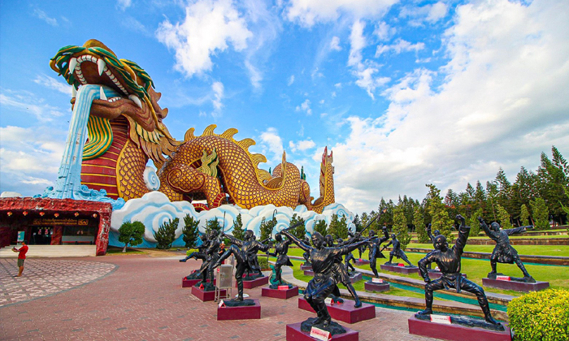

หมูบ้านมังกรสวรรค์
 มังกรสวรรค์ เป็นที่เที่ยวดังสุพรรณบุรีเลยทีเดียว ที่นี่สร้างขึ้นในปี พ.ศ.2539 ตั้งอยู่ภายในศาลเจ้าพ่อหลักเมืองสุพรรณบุรี เนื่องในโอกาสที่ประเทศไทยและจีน มีความสัมพันธ์ทางการทูตครบ 20 ปี นั่นเอง โดยมีความโดดเด่นสวยงาม ก็คือ รูปปั่นมังกรขนาดใหญ่ ที่ตั้งอยู่นั่นเองเวลาเปิด-ปิด เปิดทุกวัน 10:00-16:00 น.
ค่าเข้าชม เข้าชมฟรี ยกเว้น พิพิธภัณฑ์ลูกหลานพันธุ์มังกร